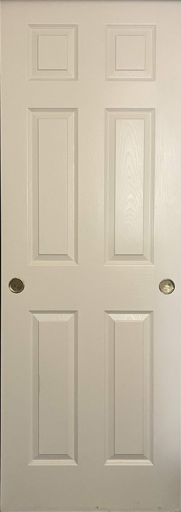
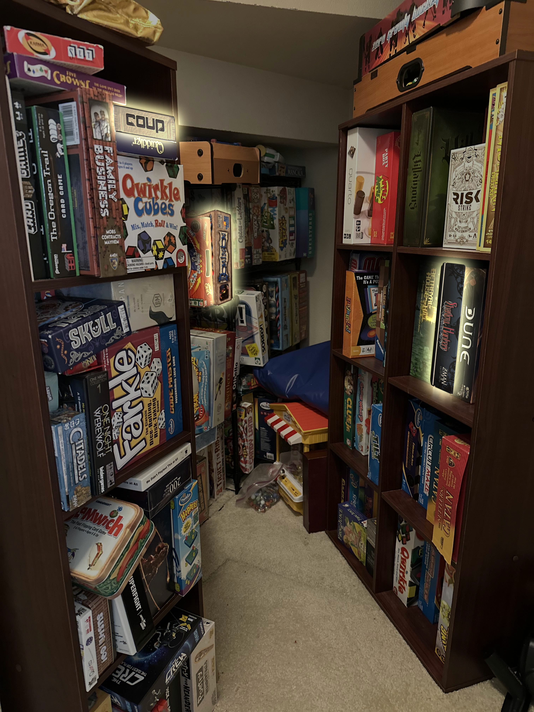

Coup is a social deducation game about lying and deception. I first played Coup with my cousins who live in LA. Its small box and very few pieces (just a couple cards and coins) allow it be be extremely portable. I've even played it in the car before! It's definitely a favorite to bring along and it's really easy to teach people how to play.
Shadowhunters is my absolute favorite board game. It's a social deduction game about two faactions: shadows and hunters. You have to figure out who your teammates and enemies are and secretly attack throughout the game. I love how this game is always a different experience depending on the people you play it with, and you can play with up to 8 people! They don't sell this game any more, so it's my absolute prized possession.
Dominion is a really fun deck-builder game. Throughout the game, you make your deck stronger and stronger to buy victory points and win the game. It's very strategy-based and can get really competitive with attack cards and very satisfying when chaining actions. They also have an online version of this game that I play a bunch too!